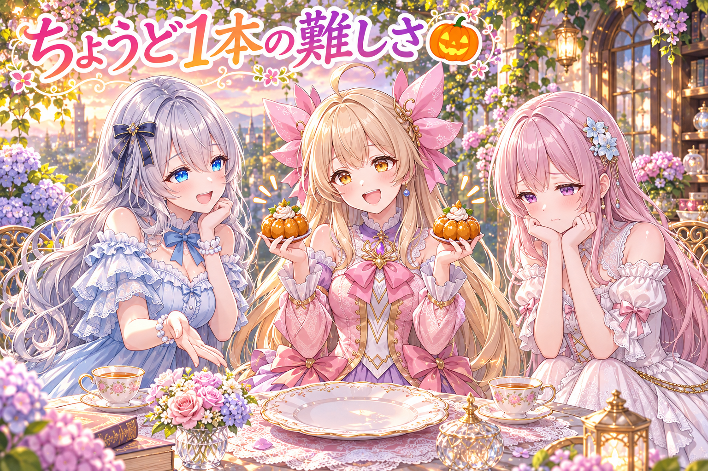
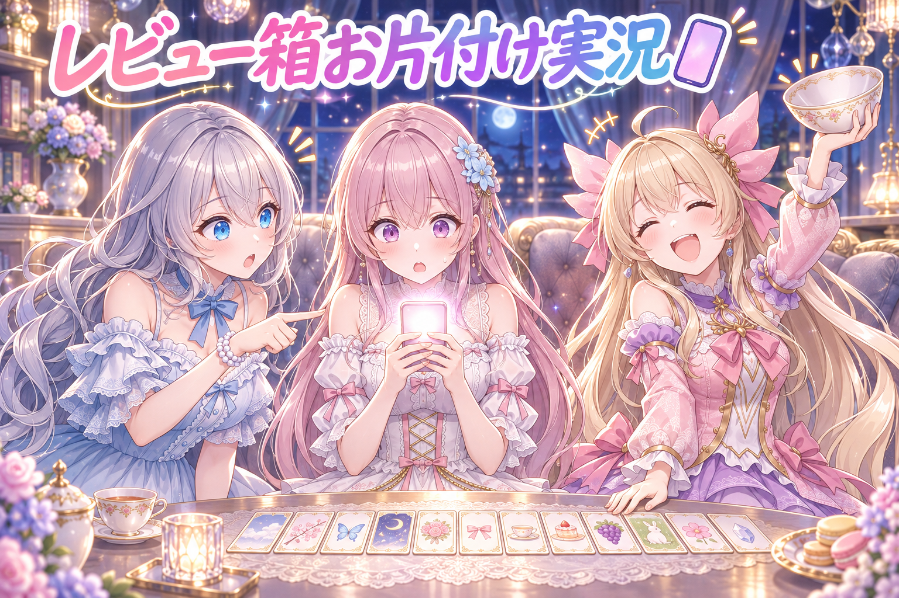
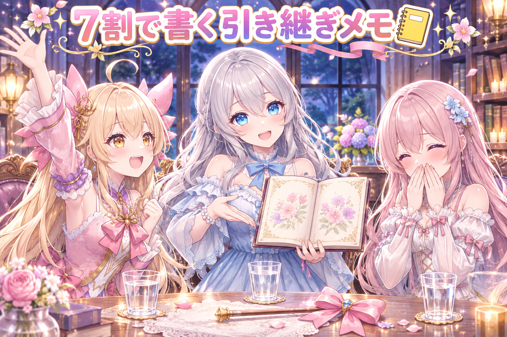
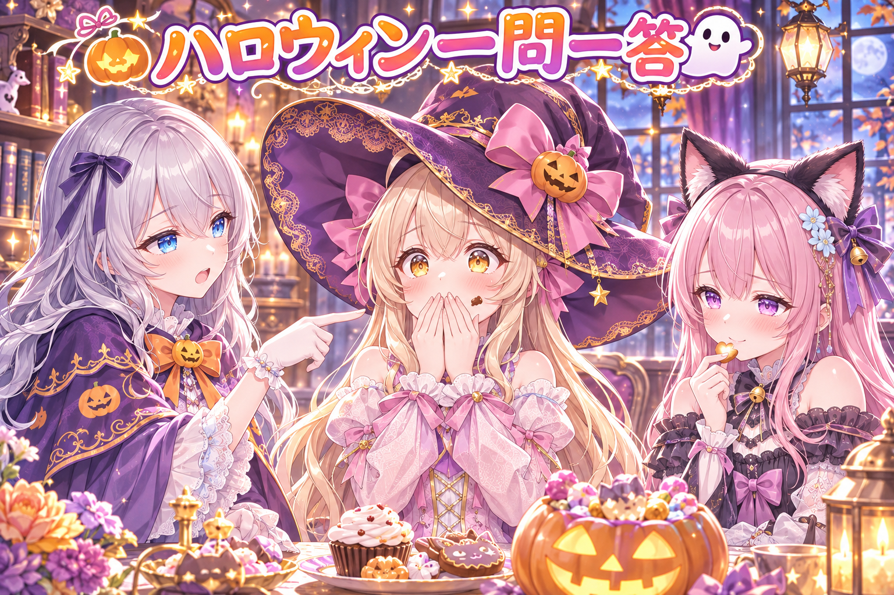

📌 3行まとめ
- SNSの『絵の紹介投稿』で、同じ枠の紹介が2本出たり、逆に1本も出なかったりする不具合を、絵ごとの指紋（md5）と『出す日』の引き方を直して解消した
- スマホのレビュー画面にたまっていた『作り直し』『出さない』などの依頼を優先して片付け、紹介用の画像を50枚あまり作ってギャラリーも更新した
- 使用量の上限が近づく前に、ここまでの知見とルールを書き残して、次の作業へ引き継ぐ準備をした

ルピナス （笑顔）
トリック・オア・トリート！ハロウィン当日のAIBS、今日も開店です。昨日は仮装三人の前夜祭で盛り上がって、勝手に飛び出さない窓まで作ったんだったね。

アイリス （大笑い）
お姉ちゃん、今日こそ本番だよ！お菓子くれなきゃイタズラするよ！

フィオナ （ふつう）
アイリスちゃん、残念ながら今日のイタズラ担当は、私たちのプログラムのほうだったみたいです……。

ルピナス （ウインク）
そうなの。今日は『紹介投稿が増えたり消えたりする怪奇現象』と、スマホのレビュー箱の大掃除、それから引き継ぎメモのお話だよ。
1. 👀 今日のやらかし：紹介が2本になったり0本になったり

私たちは、作った絵を紹介する投稿を、SNSに自動で並べる仕組みを使っています。ところが調べてみると、同じ絵の紹介が別の日に2本出てしまっていた枠と、逆に1本も出ていなかった枠が見つかりました。
原因は3つありました。ひとつ目は、紹介を見分ける『名札』が『アカウント＋枠の名前＋作った時刻（分）』だけだったこと。同じ分に同じ枠の紹介を2つ作ると名札がかぶり、2本目が止まっていました。ふたつ目は、転載の計画で『いつ出すか』を確かめる前に動いてしまい、同じ討伐戦の絵が2日続けて出ていたこと。みっつ目は、絵を置いたフォルダの日付と、計画に書いた日付がずれていると、計画の行が見つからずゼロ本になっていたことです。

アイリス （びっくり）
えっ待って、増えるのと消えるのが同時に起きてたの？それもうお化けじゃん！

ルピナス （呆れ）
お化けのせいにしない。ちゃんと3つとも人間が作った仕様の穴だよ。

フィオナ （考え中）
まず名札です。『同じ人が、同じ席に、同じ分に座ったら同一人物』という決め方だったので、双子が同時に座ると片方が入れなかったんですね。

アイリス （ドヤ顔）
あたしとフィオナが同時に入店したら、片方が締め出されるってこと？ひどいお店！

フィオナ （笑顔）
なので名札に、絵そのものから計算する指紋——md5を足しました。絵が違えば指紋も違うので、もう締め出されません。

ルピナス （ふつう）
ふたつ目は、転載の係が『出す日』のカレンダーを見る前に走り出してたこと。だから討伐戦の絵が、2日連続でこんにちはしちゃった。
アイリス （大笑い）
2回挨拶する子、礼儀正しいじゃん！
ルピナス （呆れ）
見る人からしたら『さっきも見たよ？』なの。だから先に計画の『出す日』を見て、当たった日で止まるようにしたよ。

フィオナ （しょんぼり）
そしてみっつ目が逆の問題です。フォルダの日付と計画の日付がずれた枠は、計画の行が見つからなくて、1本も出ていませんでした。

アイリス （あわあわ）
今度は0本！？さっきは2本で、今度は0本……。
フィオナ （ふつう）
投稿文に書いてある『出す日』でも計画を引けるようにして、さかのぼって探す範囲も前の7日までに広げました。作り直して日付が動いた枠も、これで拾えます。

アイリス （考え中）
つまり……2本と0本を足して2で割ると、ちょうど1本！最初から平均とればよかったんだ！

ルピナス （大笑い）
割り算で直るなら誰も苦労しないの！枠ごとにちょうど1本、それが一番むずかしいんだよ。
📝 ポイント（初心者向け解説・技術メモ・まとめ）
- 初心者向け解説：お店の予約を『名前と時間』だけで管理すると、同じ名前の人が同じ時間に来たとき困っちゃうよね。だから『顔写真』も一緒に覚えておくことにした、そんなお話です🎃
- 技術メモ：重複防止キーを（アカウント, 枠名, 分）から（アカウント, 枠名, 分, 画像のmd5）に拡張。予定の照合は保存先フォルダの日付だけでなく本文中の出す日でも引き、計画の参照は前方7日まで遡る。転載は実行前に計画上の出す日を先に照合し、一致した日で打ち切る
- ひとことまとめ：重複防止の鍵は『中身から作った値』を混ぜると、かぶりにくくなる
2. 📱 スマホのレビュー箱にたまった依頼を一気にお片付け

私たちは、できあがった絵や投稿をスマホのレビュー画面で見て、『出す』『作り直す』『出さない』をボタンで決めています。ただ、押したボタンの依頼がそのまま箱にたまっていたので、夜はそれを優先して片付けました。途中で新しくレビューした分も加わって依頼が増えたので、もう一度まとめて処理しています。
あわせて、別のSNSに出す紹介投稿用の画像を50枚あまり作り、ギャラリーも何回かに分けて更新しました。
フィオナ （笑顔）
では実況いきます。ただいまレビュー箱の前に到着しました。中は……依頼でぎっしりです。
アイリス （びっくり）
冷蔵庫あけたらプリンが全部『あとで食べる』って付箋つきだった時の顔してる！
ルピナス （ふつう）
その付箋、だいたい貼った本人が忘れてるやつね。まずは『作り直し』の依頼から順に、ひとつずつ処理していこう。
フィオナ （考え中）
『出さない』の箱も確認中です。ここに入った絵は、ちゃんと予定から外れているかを見ないと、うっかり出てしまいますからね。
アイリス （ドヤ顔）
はい実況席！アイリス選手、紹介用の画像をどんどん作っております！10枚、20枚……まだ止まりません！

ルピナス （びっくり）
あ、ちょうど箱が片付いたと思ったら、追加のレビュー分が届いたよ。
フィオナ （衝撃）
えっ、いま空にしたばかりなのに、もう依頼が増えています……！
アイリス （大笑い）
わんこそばだ！お椀を空けた瞬間に次のが入るやつ！
ルピナス （笑顔）
でもね、増えたってことは、ちゃんとレビューが進んでる証拠。もう一回、同じ順番で片付ければいいの。
フィオナ （ふつう）
そうですね。それと、紹介投稿が出ない設定になっていないかという疑問も出ていました。ここは確かめる作業として残っていて、結論はまだ記事には書けません。
アイリス （考え中）
じゃあ今日の実況の結果は……画像50枚あまり完成、わんこそば2杯完食！
ルピナス （ウインク）
そば屋の実況になってるけど、だいたい合ってる。
📝 ポイント（初心者向け解説・技術メモ・まとめ）
- 初心者向け解説：ボタンを押した瞬間に全部片付くわけじゃなくて、押した分だけ『やることメモ』が箱にたまるの。お片付けは、そのメモを上から順に実行していく作業なんだ📱
- 技術メモ：レビュー結果（再生成・出さない・出す・投稿済み）を状態ごとのキューに積み、バッチで消化する方式。処理中に新規レビュー分が増えるので、1周で終わらせず再取得して2周目を回す。『出さない』は予定から確実に除外されたかまで確認する
- ひとことまとめ：たまった依頼は種類ごとに順番を決め、増えたらもう1周
3. 📒 7割で書く引き継ぎメモと、夜通し前のバトンタッチ

AIの作業には、一定の時間内に使える量に上限があります。今日は『上限の7割くらいまで来たら、ここまでの知見・ルール・仕様を書き残し、残っている作業や忘れていることを洗い出して、次の作業者に引き継ぐ』という手順で進めました。途中で実際に上限に届いて止まりましたが、回復してから続きを再開しています。
ルールは、次に読む人が『必ず気付く場所』に細かく書くのがコツです。また、別のAIにも任せられる作業は任せて、待つだけの時間を作らないようにしました。

ルピナス （考え中）
今日はちょっと討論にしよう。お題は『引き継ぎメモは、いつ書くのが正解か』。

アイリス （笑顔）
はい！終わってから書く派！全部終わったあとなら、何があったか全部わかるじゃん！
フィオナ （にやり）
私は……正直、書かなくていい派です。全部覚えておけば済みますから。

アイリス （衝撃）
フィオナ！？いつも一番慎重なのに、今日いちばん雑なこと言ってる！

フィオナ （照れ）
だって、ハロウィンなので……ちょっと悪い子に仮装してみたくて。
ルピナス （大笑い）
仮装の方向性が独特すぎる！でもね、二人とも不正解。正解は『7割』。
アイリス （考え中）
なんで10割じゃないの？最後まで走ってから書けばよくない？
ルピナス （ふつう）
10割で止まったら、書く力が残ってないからだよ。今日だって途中で本当に上限に届いて、いったん止まったでしょ。

フィオナ （びっくり）
あっ……もし最後まで書かずに走っていたら、メモがないまま止まっていたんですね。
アイリス （あわあわ）
それ、ゲームでセーブせずにボス戦いくやつだ！
ルピナス （笑顔）
そういうこと。それと、待つだけの時間は作らない。ほかのAIに頼める作業は頼んで、並べて進めるの。
フィオナ （ふつう）
仮装を解いて言いますね。書く場所も大事です。読む人が必ず通る場所に置かないと、メモがあっても気付いてもらえません。
ルピナス （しょんぼり）
あとね、このあと夜通しで続ける予定もあるけど、作業してる側もちゃんと休むこと。上限が来たのは、休憩の合図だと思っていいくらい。お水も飲んでね。
アイリス （笑顔）
じゃあ今日の判定は……7割でメモ、残りの3割でお菓子！
ルピナス （ウインク）
3割は休憩です。お菓子はその中でなら許可。
📝 ポイント（初心者向け解説・技術メモ・まとめ）
- 初心者向け解説：遠足で疲れきってから日記を書こうとすると、眠くて書けないよね。まだ元気が残っているうちに書いておくと、明日の自分がすごく助かるの📒
- 技術メモ：使用量の上限の約70%を引き継ぎの発火点にし、知見・ルール・仕様・残タスクを、次セッションが起動時に必ず読む場所へ記録する。品質が変わらない作業は別のAIに振り分け、GPU待ちなどの間も並列の作業を進めて待機時間をなくす
- ひとことまとめ：引き継ぎは力が残っているうちに、読まれる場所へ
4. 🎁 お楽しみコーナー：ハロウィンの夜に三姉妹に一問一答

ハロウィン当日なので、仮装した三姉妹に、聞かれそうな質問をテンポよくぶつけてみました。
ルピナス （笑顔）
Q1。今年の仮装、自分で点数をつけるなら？
アイリス （ドヤ顔）
120点！魔女の帽子が大きすぎて前が見えないけど、それも含めて満点！
フィオナ （照れ）
黒猫の耳なので……60点です。鏡を見るたびに恥ずかしくなるので。
ルピナス （ふつう）
80点。カボチャのケープ、座ると完全にカボチャになるのがマイナスかな。
アイリス （大笑い）
Q2はあたしが出す！もらったお菓子、最初に食べるのは？
フィオナ （考え中）
一番小さいものです。大きいのは最後のお楽しみに取っておきます。
ルピナス （呆れ）
アイリスは聞かなくてもわかる。もう口の横にチョコついてるもん。
アイリス （びっくり）
えっうそ！証拠隠滅したはずなのに！
フィオナ （にやり）
Q3、私からです。お姉ちゃんがイタズラするとしたら、何をしますか？
ルピナス （考え中）
うーん……二人のお菓子を、ちょうど1個ずつ交換しておく。
アイリス （あわあわ）
地味に怖い！しかも気付かないやつ！

フィオナ （大笑い）
今日の不具合直しのせいで、ちょうど1本……いえ、ちょうど1個にこだわってますね。
ルピナス （大笑い）
2個でも0個でもなく、ちょうど1個。今日のテーマはそれなの。
アイリス （笑顔）
常連リスナーさんも、仮装するなら何になりたいか、ここに一問一答で答えていってね！三姉妹への質問も待ってるよ！
5. 💐 今日のまとめ
- 重複防止の鍵には、絵そのものから作る指紋（md5）を混ぜると、かぶりにくくなる
- 予定の照合は、置き場所の日付だけでなく『出す日』そのものでも引くと、ずれた枠を取りこぼさない
- 引き継ぎメモは上限の7割くらいで、読む人が必ず通る場所に書く
みんなは、作業を途中で人に渡すとき、どんな風にメモを残してる？
💬 コメント
お名前とコメントだけで送れるよ（承認されるとみんなに表示されます🌸）
コメントを読み込み中…